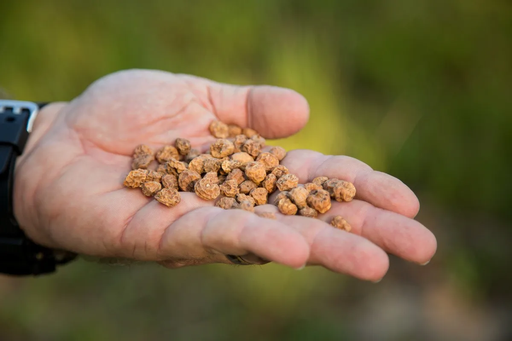
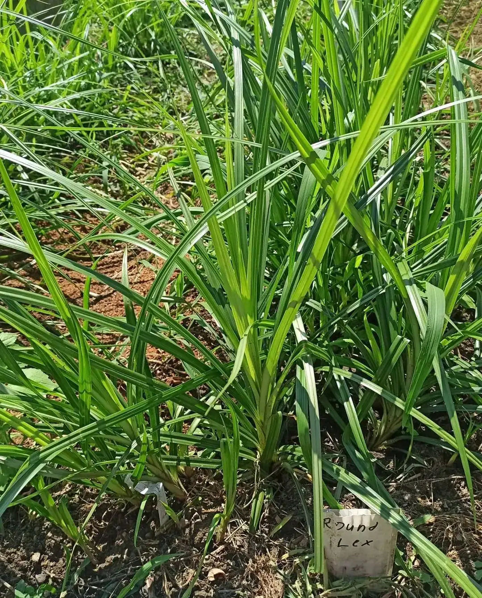
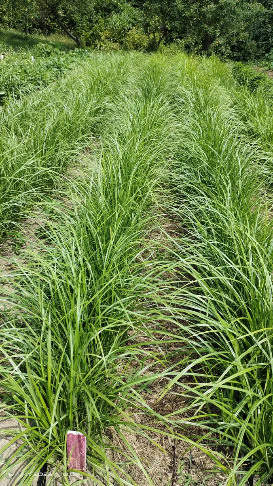
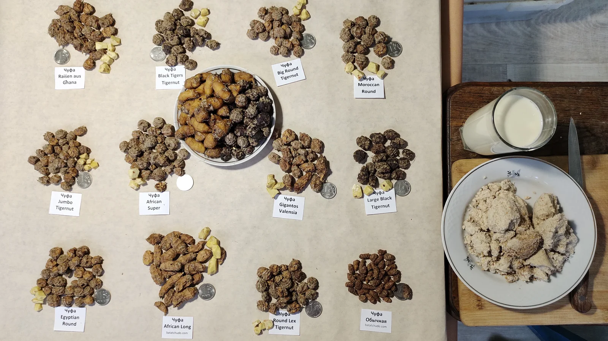

Земляной миндаль — древняя культура со съедобными клубеньками. Неприхотлива, питательна, универсальна. В коллекции Batatchudo 12 сортов.
Неприхотливая культура с богатой историей, которая радует урожаем без лишних хлопот.
Каждый сорт чуфы уникален — от формы и размера до вкуса и кулинарного применения.
Чуфа в разные сезоны: от всходов до сбора урожая.




От посадки до сбора — основные этапы сезона чуфы.
Всё, что нужно знать о культуре: от истории до кулинарных секретов.
Чуфа, или сыть съедобная (Cyperus esculentus) — многолетнее растение семейства Осоковые. В Египте её употребляли в пищу ещё 4 тысячи лет назад. В Россию попала в конце XVIII века под названием «зимовник».
Ареал — от Средиземноморья до умеренного климата. Растение неприхотливо, но светолюбиво. Высота куста 30–60 см, урожайность до 30–40 кг с сотки.
Высаживают в середине мая, когда земля прогреется до 13–15 °C. Перед посадкой замочите клубеньки на 2–3 часа в тёплой воде. Глубина заделки 3–5 см, расстояние между растениями 20–25 см.
Уход минимален: полив по мере подсыхания почвы, прополка, окучивание. Подкормка органикой раз в 2–3 недели.
Убирают в конце сентября – начале октября, когда ботва желтеет. Выкапывают в сухую погоду, отделяют клубеньки, просушивают. Хранят как картофель: сухое помещение при 10–16 °C.
В правильных условиях клубеньки не теряют вкус и всхожесть до 2–3 лет.
Из чуфы делают знаменитый испанский напиток орчату (horchata de chufa). Сладкие сорта (African Long, Raisen aus Ghana, Gigantos Valensia) едят сырыми как орешки.
Несладкие (Black Tigers, African Super) — в супах, рагу и салатах. Клубеньки можно перемалывать в муку для выпечки.
Замочите на 2–3 часа в тёплой дождевой или талой воде. Это ускорит прорастание. Не передерживайте дольше 6 часов — клубеньки могут закиснуть.
Да, отлично растёт. Высаживайте в грунт в середине мая на солнечном участке. Почва подойдёт любая, кроме переувлажнённой.
По форме, размеру и цвету: African Long — удлинённый, Large Black — почти чёрный, Jumbo — самый крупный. По вкусу сладкие (для орчаты) и несладкие (для супов и рагу).
Орчата (horchata de chufa) — испанский напиток из вымоченных и перетёртых клубеньков чуфы с сахаром. Лучшие сорта: Gigantos Valensia, Raisen aus Ghana, African Long.
Высушенные клубеньки хранятся в сухом помещении при 10–16 °C до 2–3 лет без потери вкуса и всхожести.
Посадочный материал из коллекции Batatchudo и рекомендации по выращиванию.